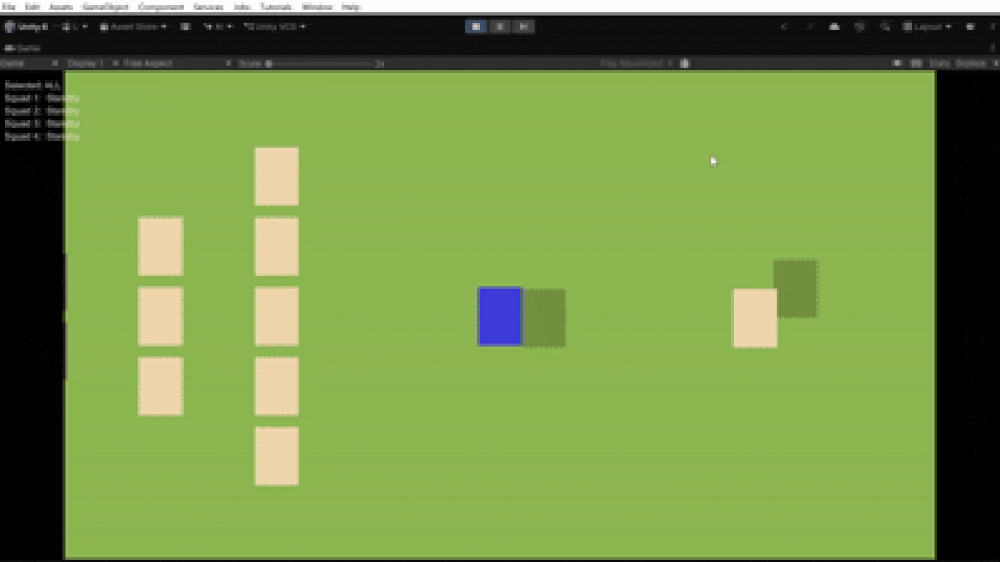
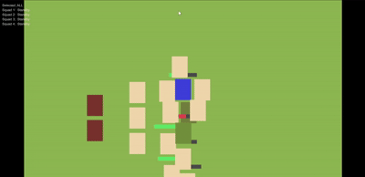

A 2D city-builder and mass battler in Unity, where you capture enemies instead of killing them. This log tracks what I build, what breaks, and why I made each choice.
Battles can now finish properly. A fight ends in a win when the last enemy goes down, a loss when my hero goes down, or a retreat when the hero holds the edge of the field for two seconds. The result is applied to my army, prisoners are kept or released, and the game returns to where the fight started.
I also added a command zoom: hold Space and the camera snaps out to exactly twice the view, so I can give orders to squads I can't otherwise see. It snaps instead of sliding because pixel art only stays sharp at whole-number zoom levels. The army now starts in lines by squad, with squad 1 at the front.

Holding Space to zoom out. Individual squad selection and different commands like charge, follow, and retreat.
What went wrong
Charging units froze when they were boxed in by friends standing on Hold, because they waited forever for someone who was never going to move. Now they walk through friends who are only standing, step sideways around friends who are fighting, and queue behind the hero when following. Units also jittered while moving, which turned out to be a camera timing setting rather than the movement code.
Next
Play the world map for the first time: the code is written, but nothing on it has been tested yet
Build the post-battle screen for deciding what happens to prisoners
Oct 2026
Squads, orders and data
Squads
Orders
Data
The army is split into up to four squads, picked with the number keys. Each squad takes one of four orders: follow me, hold position, charge, or retreat. An order sets a goal, not a behaviour, so in a mixed squad an archer and a spearman both "charge" in their own way. Selected squads get an outline, and an arrow at the screen edge points to any squad that is off-screen.
Every unit type now lives in a data file instead of in code: humans from beggar to genius, goblins and demons, each with a tier. Both armies are spawned from these lists, so a new unit is a new file, not new code.
Next
A proper 20 v 20 fight — the biggest so far is about 10 v 5
Sep 2026
Coloured squares and capture
Combat
Capture
Setup
I set one rule before writing any code: no art until the gameplay works. Every unit is a plain 32 × 32 coloured square, because squares answer "is this fun?" just as well as finished sprites, and every frame drawn before the mechanics settle would be redrawn later.
The player and every other unit share the same combat parts — health, team, and an attack built from a list of steps, so a combo is just a longer list. That is how being a hero and commanding an army stay one system instead of two. Knocking an enemy out captures it automatically, but it stays hostile until persuaded, and stronger units are much harder to persuade.

Downing and capturing an enemy. Downed enemies are grey while dead enemies are red.
Sep 2026
Starting out
Design
The idea: a 2D game where you are both a fighter on the battlefield and the commander of your army, and where you grow by capturing enemies rather than killing them. It borrows specific pieces from games I love — capturing and promoting units from Mount & Blade: Bannerlord, building freedom from Clash of Clans, capture-and-keep from Zombie Cafe — with the world inspired by That Time I Got Reincarnated as a Slime and The World of Kung Fu: Dragon and Eagle.
Before building, I wrote down the big decisions and the reason for each: about 20 units a side so the hero still matters, a camera that stays on the hero, and orders shouted to a few squads instead of an RTS control scheme.